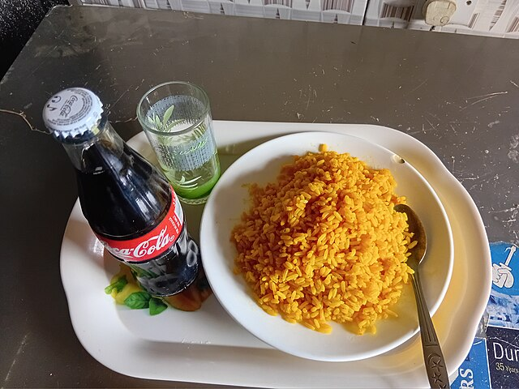

Palm-Oil Rice

Photo by User: DeletedUser
Wikimedia Commons
/ CC BY-SA 4.0
Description
Palm oil rice, also known as "Native Jollof Rice" or Iwuk Edesi,
is a one-pot Nigerian rice dish distinguished by its use of palm oil,
which provides a deep reddish-orange color, earthy flavor, and rich,
satisfying taste. It incorporates local ingredients like crayfish,
iru (fermented locust beans), and smoked fish or meat, and can
also include leafy greens such as ugu (pumpkin leaves) or spinach.
Ingredient
- 2 cups of rice
- 1 cup Pepper mix tatashe(Red bell pepper,
ata rodo (scotch bonnet chilli), tomato and
onions blended)Smoked fish of any type1-2
cooking spoons of palm oil
- 1 small onion chopped
- 3 tbsp ground crayfish
- Few pieces of dried herring palamu optional
- 1 tsp Salt use according to preference
- 1 tbsp beef bouillon optional
- Scent leaves substitute with basil1-2 handfuls
of any greens of choice I used spinach
- 2 tbsp locust beans optional
- ½ cup palm oil
Steps
- Wash rice clean and set aside, if you want to parboil the rice,
you can do so.
- Wash and soak your dried fish then set aside and you don’t need
to soak the smoked fish
- Place a pan on medium heat, add palm oil and heat for about 5
minutes but don’t bleach
- Add chopped onions and fry till translucent, add the pepper mix
and crayfish, seasoning and salt and cook till oil floats on
top of the sauce.
- Add rice to the sauce and stir to combine, add water to cover the
rice by 1 inch and reduce the heat.Do keep an eye on the rice,
add water if required. After about 7 minutes, add the dried fish to the rice.
Continue to cook rice on low heat till 95% done, (Add water to rice a little
at a time as at when needed) Check for salt and seasoning and adjust accordingly,
add the smoked fish andstir carefully to combine.
- Cook for another 5 minutes then add basil (Scent leaves) and your greens of choice to rice.
Continue cooking till rice is soft but not soggy.
- Take it off the heat and set aside to cool. Serve immediately
Home
{kind=link}